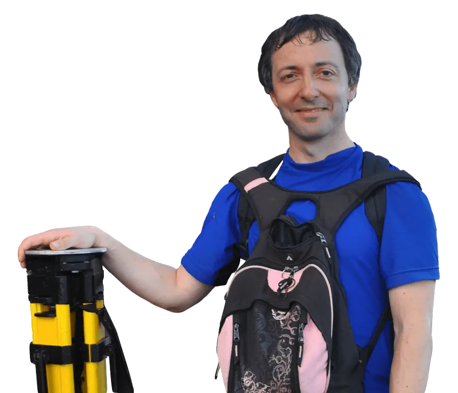

Our story
Pioneers of VR experiences.
Lost Eagle was founded by Luke Farrer, who left a career in law for computer graphics engineering. The studio is based in Boston and captures places from Australia to the Andes.

- 2013
A canyon on Kickstarter
A crowdfunded laser scan of Claustral Canyon, now exhibited at the Govetts Leap Visitor Centre.
- 2021
Machu Picchu, without tourists
With the site closed, we directed photographers in Cusco remotely from Boston.
- 2022
Real Peru VR
Huayna Picchu, Choquequirao and the Amazon, made with Cusco partners Tinkuy Travel and Doslados Studios.
- AIXR
Shortlisted for VR Experience of the Year
For “Getting Lost in Nature with Luke”.